Three storefront widgets that sell more without making the shopper feel sold to.
Extendsell helps Shopify merchants raise the value of an order. I designed the three widgets a shopper actually meets — and every state, theme, and breakpoint behind them.

Two users. Opposite wants. Every screen has to satisfy both.
- The merchant wants
- The offer seen. Frequent, visible, hard to scroll past.
- The shopper wants
- To not be sold to. No tricks, no surprises at checkout.
- So the rule was
- A screen ships only if it survives both readings.
Add-ons — one at a time, on purpose
A shelf, not a bundle. Each card has its own price, its own variant, its own button — and the subhead says the rule out loud so nobody has to guess.
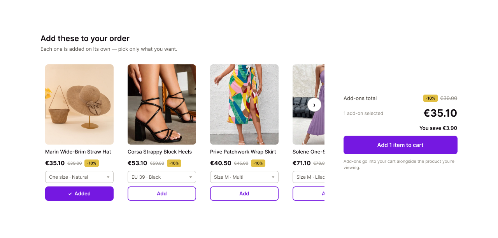
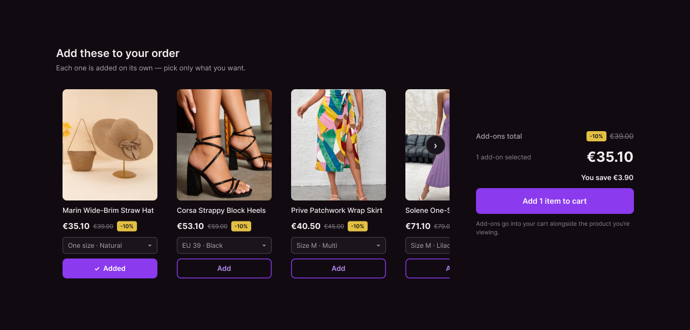
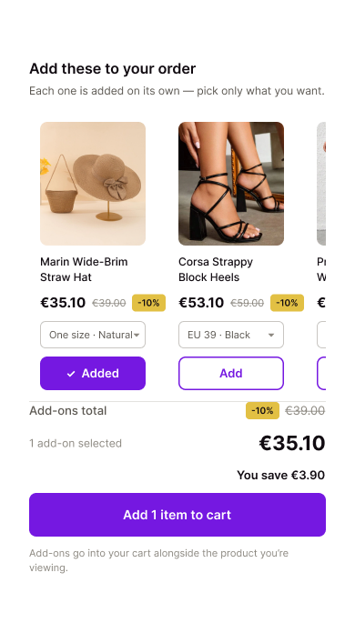
- Button
- "Add 1 item to cart" — counts what's selected, so the commitment is never vague.
- Saving
- Shown in currency, not only a percentage. €3.90 lands harder than 10%.
- Microcopy
- Says where the add-ons go, because a surprise at checkout costs the next order too.
Frequently bought together — one decision, made of parts
Untick the belt and the total recalculates; the rest of the offer survives. A bundle a shopper can edit is one they'll believe.
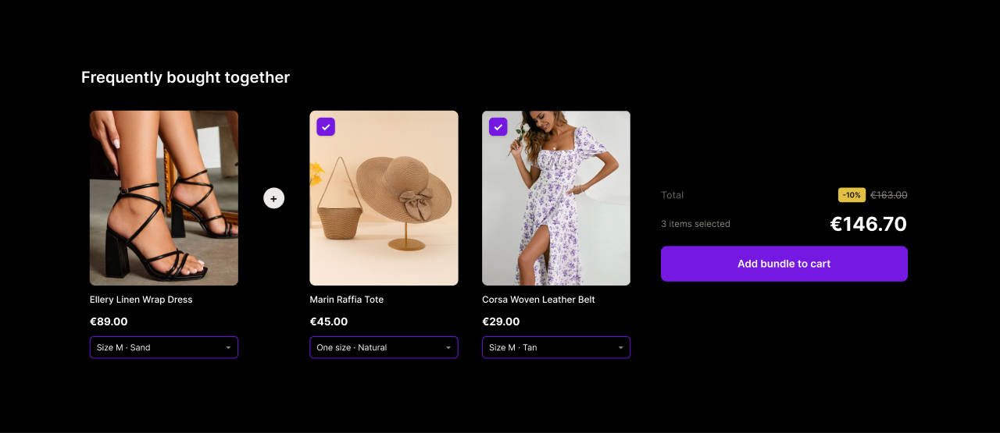
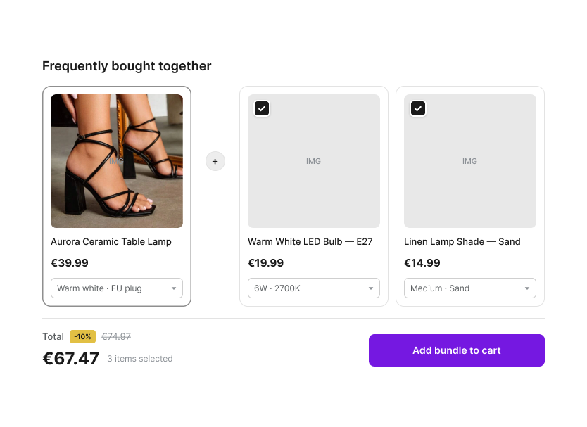
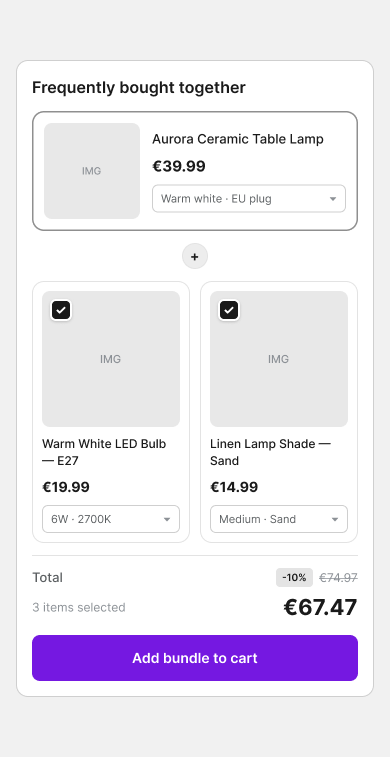
- Every item
- Keeps its own variant selector. Bundles fail when you can't pick your own size.
- The discount
- Sits beside the struck-through original, so the saving needs no arithmetic.
- Placement
- Directly under the buy button, where intent peaks — not at the foot of the page.
Related products — discovery without a detour
Not selling a bundle — answering "is there something better for me here?". Paged, so the shopper can see how much there is, with a quick view that never costs them their place.
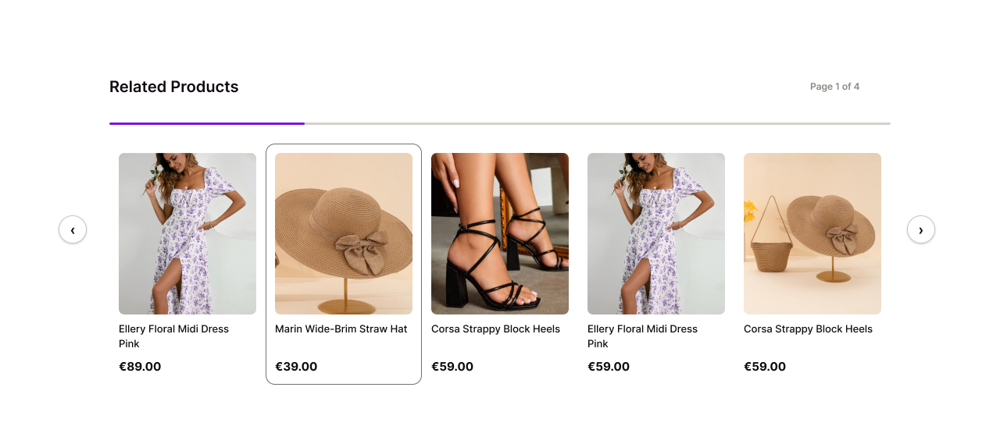
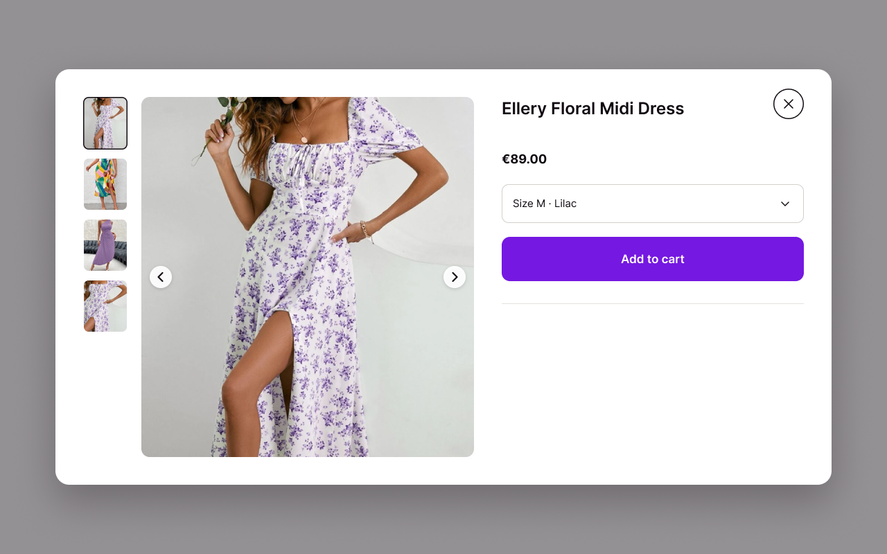
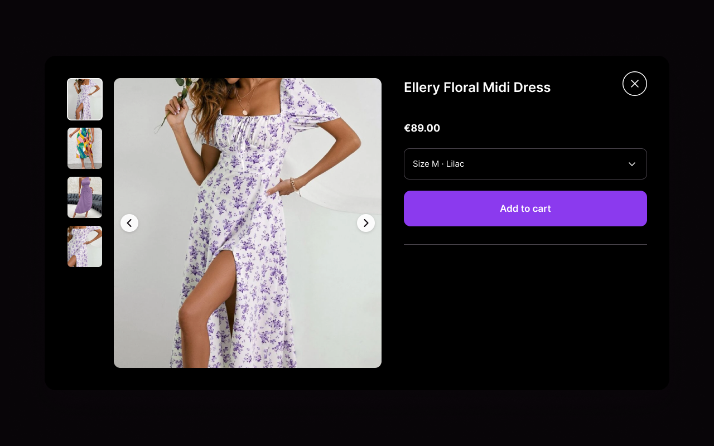
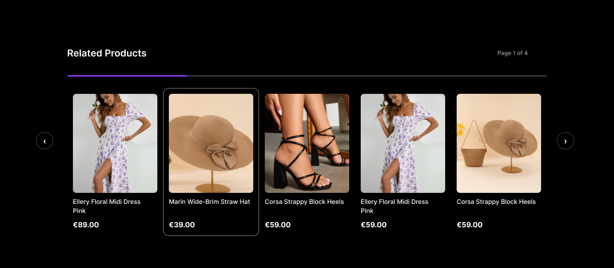
Getting there
Three visual directions, each argued on its merits and put to the team as a real choice. Same layout, same flow — the difference is who the widget belongs to.
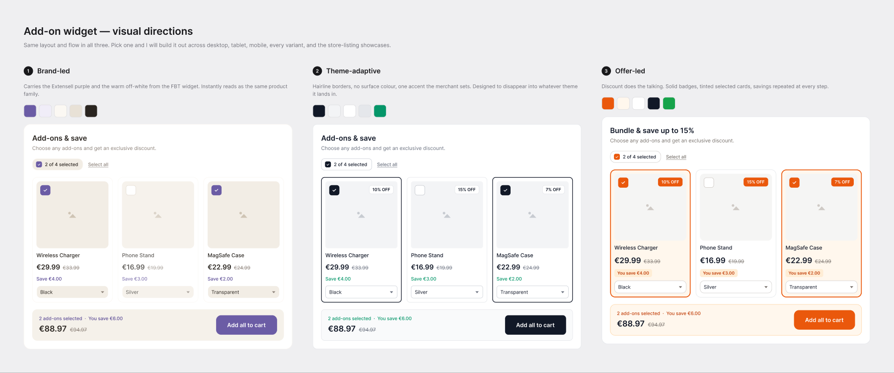
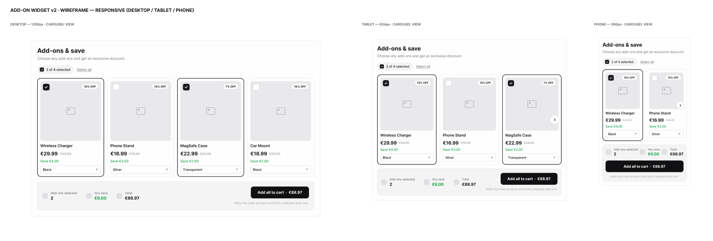
Want the full walkthrough?
Happy to open the Figma files and talk through the states, the edge cases, and what got cut.